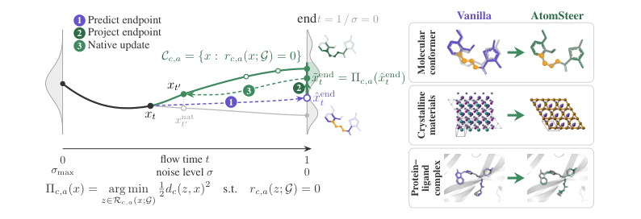
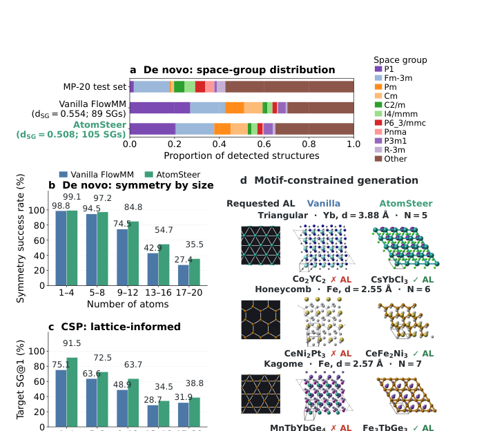
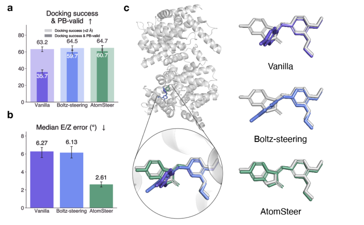

AtomSteer：让已有原子生成模型在采样时满足结构约束
论文原文 ↗论文：AtomSteer: Test-Time Constraint Steering for Atomistic Generative Models
作者：Pengfei Cai、Katharina S. C. Jäger、Utkarsh Utkarsh 等，MIT
来源：arXiv，2026-10-28 ·
已经训练好的晶体生成模型，能否临时加上“这些磁性原子必须形成 Kagome 网格”这样的要求？已经能生成分子三维构象的模型，能否在保持整体形状的同时纠正双键构型？AtomSteer 把这两个问题放进同一套采样流程：让模型继续负责生成结构，在它每次预测的最终结构上施加适合该约束的几何修正，再把修正传回后续采样。模型权重保持冻结。
这篇文章值得看的地方，是将约束测量方式与实际移动结构的方式分别设计。测量双键构型只需要四个原子，但纠正错误可能需要旋转整个取代基；检测蛋白质与配体碰撞用的是原子间距离，但消除碰撞可以整体平移、旋转配体。晶体对称性则需要同时处理晶格和对称等价原子。这样的结构操作，使现有生成器可以承接新的设计条件。
为什么生成得像，还会不满足结构要求
扩散模型和流匹配模型都从噪声逐步生成坐标。模型学到了训练结构的统计分布，采样出的某个结构仍可能偏离严格约束。例如，晶体中的两个位置本应通过空间群操作彼此对应，微小的坐标和晶格偏差却会破坏这一关系；分子也可能在总体形状合理时出现扭曲的双键几何。
这里的 E/Z 指双键两侧高优先级取代基的相对位置，分别对应异侧和同侧；双键附近应接近平面。R/S 则描述四面体手性中心的左右手性。只判断 E 或 Z 标签是否正确，不能说明双键周围的二面角是否接近真实几何。作者因而同时关注结构有效性、连续角度误差以及原任务的生成精度。
从噪声到满足约束的结构，具体怎样走

图1：预测最终结构，在结构空间修正，再继续原有采样。
输入包括预训练生成器和任务所需的结构信息：分子任务使用含原子、键及立体化学标记的分子图；晶体任务使用生成中的元素、分数坐标和晶格，指定图案任务还提供目标元素、图案及最近邻距离。
在一次采样更新中，模型首先根据当前带噪结构，预测采样结束时的干净结构。对于流匹配，这相当于用当前速度场外推到终点；对于 Boltz-2，则直接采用去噪网络输出。修正作用于这个终点预测，所以键长、平面性和周期对称性都有明确的几何含义。
接着，每个约束被写成“残差”：键长超过允许区间多少，非键合原子相互靠得过近多少，双键二面角偏离目标多少，或者一个原子经对称操作后与其同种元素伙伴相差多少。残差为零表示满足相应约束。投影器寻找降低残差的结构变化，并限制位移及对其他结构关系的影响。
实际修正有三类。
- 局部几何修正 ChemGN：把残差对坐标的变化近似线性化，再用带阻尼的高斯—牛顿更新求一个小位移。它依次处理键长、通过两条键相连原子之间的距离、碰撞、平面性等。蛋白质配体中的手性修正还将移动限制在尽量不改变既有键长的方向上。
- 片段或整体刚体移动：双键构型错误时，依据分子连接关系找出可转动的整个取代片段，绕双键轴旋转，再细调角度。配体与蛋白质碰撞时，可以对配体进行整体平移、旋转；片段内部距离在这种操作下保持不变。
- 晶体周期投影：同时修正空间群等价位置与晶格度量。后者决定晶胞长度、夹角，例如四方晶系的两条轴等长并相互垂直。晶体图案设计则把指定元素放到三角、蜂窝或 Kagome 周期位置，并按目标最近邻距离设置面内晶格。
一次候选修正只有在降低目标残差、满足位移限制及相关几何检查后才被接受。随后，修正过的终点预测进入骨干模型原有的流或扩散更新，下一步模型能够根据变化继续调整周围原子。不同任务使用不同投影时段：例如自由晶体生成在采样后段施加对称性修正，而指定晶格图案在整个采样过程中持续参与。模型的已学分布与外加结构条件就在这一循环中共同决定最终结构。
晶体生成：补回对称性，也能指定原子图案

图2：空间群覆盖、不同原子数的对称性表现，以及指定周期图案的生成实例。
作者把 AtomSteer 接到 FlowMM。在自由生成任务中，并不预先给每个样本指定目标空间群，而是从当前终点预测中寻找近似成立的对称操作。算法沿空间群的包含关系，选择在允许修正范围内更高对称的实现，然后同时投影等价原子和晶格。对晶格的处理保持模型预测的晶胞体积。
对 10,000 对使用相同初始噪声与原子数的样本，以检出空间群编号至少为 3 作为对称性成功标准，成功率从 71.47% 提升到 77.91%。检出的不同空间群从 89 种增至 105 种，生成分布与 MP-20 数据分布的距离也下降。改善在原子较多的晶胞中尤其明显，经 UMA 势全晶胞弛豫后仍能保留。
晶体结构预测则提供已知组成，要求恢复参考结构。MP-20 的 9,046 个测试目标中，只看原子位置和晶格的常用结构匹配指标，FlowMM 单次匹配率为 62.45%，AtomSteer 为 62.26%，基本相当；如果要求同一个生成结构既匹配参考结构、又恢复正确空间群，成功率从 45.18% 增至 52.54%。这解释了贡献所在：原本被宽松结构匹配掩盖的晶体学误差得到修正。另一个额外提供参考晶系及晶胞设置的版本达到 54.95%，对应不同输入条件。
指定图案实验更直接体现设计用途。用户给出磁性元素、最近邻距离和三角／蜂窝／Kagome 图案，生成器补全其他元素与三维结构。每种图案各测试 1,000 个条件，同时满足图案和 SCIGEN 四级预筛的比例，三角图案从 SCIGEN 的 2.5% 提高到 30.7%，Kagome 从 8.0% 到 10.9%，蜂窝从 7.4% 到 7.7%。在全部三角图案条件中，完成 UMA 弛豫并保留要求图案的比例从 31.5% 提升到 86.4%。因此，不同几何任务的收益差异明显，三角图案是这一组最突出的结果。
分子与复合物：让构型标签落实为正确几何
对 ET-Flow 分子构象生成器，AtomSteer 使用相同的 50 步采样预算。在 GEOM-Drugs 测试中，相比随机采样版本 ET-Flow-SS，PoseBusters 有效率从 93.17% 提高到 96.93%；E/Z 二面角分布与参考分布之间的距离中位数从 8.94° 降至 2.15°，降低 75.9%。生成构象对参考集合的精度提高，而参考构象覆盖率从 79.93% 变为 79.01%。后续对 100 个分子进行 GFN2-xTB 计算，能量、偶极矩、轨道能隙及最低能量的构象集合性质误差，相对各性质表现更好的原始采样器降低约 10%—36%。

图3：StereoBench 上的对接与有效性、双键角度误差，以及具体配体实例。
蛋白质—配体部分使用 Boltz-2，并构建包含 1,103 个实验复合物的 StereoBench，每个配体至少有一个非环状立体双键。输入 SMILES 提供要求的 E/Z 和 R/S；模型生成后，用实验结构衡量配体角度和对接结果。
Boltz-steering 已经能将不少结构的离散 E/Z 标签做对，但所有双键都落在实验角度 ±10° 内的比例为 59.5%，AtomSteer 提高到 79.1%；配体平均 E/Z 误差的中位数从 6.13° 降至 2.61°。在同时要求 PoseBusters 有效、配体 RMSD 小于 2 Å、双键角度及四面体手性均正确的联合标准下，单个最高置信度样本的成功率从 36.5% 增至 45.2%。单独的对接 RMSD 成功率接近，分别为 64.5% 和 64.7%，所以主要新增收益来自更准确的化学几何。
这项方法新增了什么能力
AtomSteer 给已有原子生成器提供了一层可插入的结构控制：先用分子连接或周期结构知识定义要求，再选择与结构运动相匹配的投影。晶体、独立分子、蛋白质复合物共享“预测终点—投影—继续采样”的框架，具体几何操作则分别构造。对于已有生成模型、又想添加对称性或指定原子子结构的研究，这条路线提供了无需重训的实现方法，也展示了如何用原任务精度与约束成功率共同评价新增控制能力。
原始摘要完整译文
扩散和流匹配模型为生成晶体材料、分子构象以及蛋白质—配体复合物提供了可扩展的方法。然而，满足晶体学对称性、结构几何和准确的立体化学要求仍然具有挑战。要满足这些要求，需要在修正时保留预训练模型已经捕捉到的几何关系。在本工作中，我们提出 AtomSteer，一个在测试时利用结构约束引导预训练原子级生成模型的推理框架。在采样过程中，AtomSteer 使用有界局部投影、保持图中片段刚性的立体化学变换，以及针对周期对称性的投影，修正中间结构预测；它接受能够改善约束满足程度、同时限制结构其余部分变化的更新。我们在 FlowMM、ET-Flow 和 Boltz-2 三个预训练骨干模型上验证 AtomSteer，涵盖从头晶体生成与晶体结构预测、分子构象生成，以及蛋白质—配体复合物结构预测。AtomSteer 改善了从头晶体生成中空间群分布的覆盖，并提高了晶体结构预测中目标空间群的恢复程度。AtomSteer 在保留构象集合保真度的同时，提高分子有效性和 E/Z 立体化学精度。对于蛋白质—配体复合物，AtomSteer 降低了相对实验参考结构的配体 E/Z 误差，同时获得具有竞争力的对接成功率和 PoseBusters 有效性。我们的方法提供了一个统一框架，无需重新训练或改变架构，即可为已有原子级生成模型加入化学与晶体学控制。